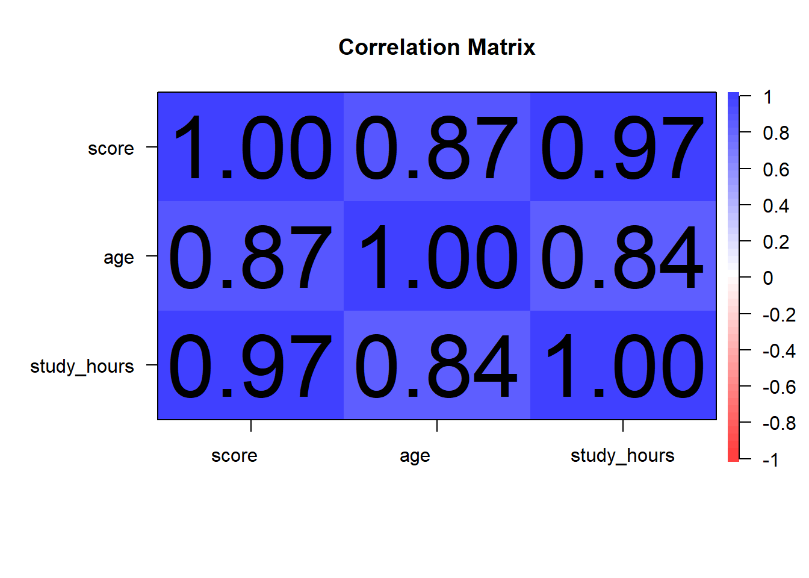
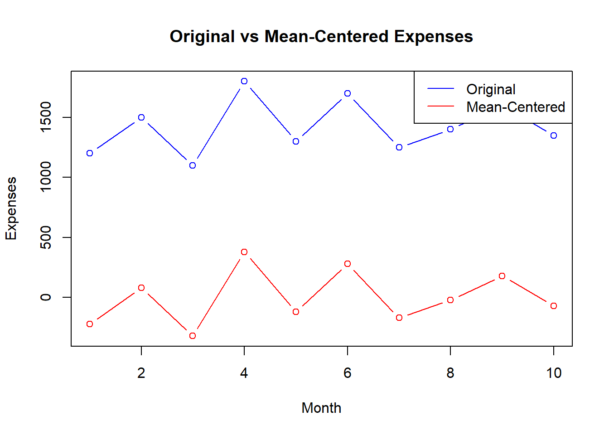
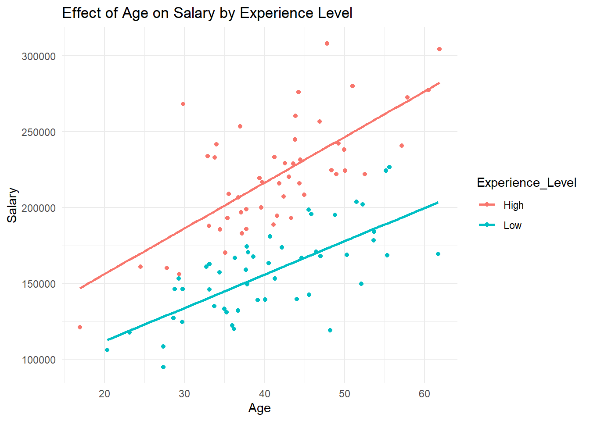

Appendix: Answers to Chapter Exercises
This appendix provides solutions to the exercises given at the end of each chapter. These solutions are intended to help you verify your work and understand the correct approach to each task.
Answers to Chapter 1 Exercises
Exercise 1: Familiarization with R Studio
- Create a new R script and save it
- Open R Studio, go to
File > New File > R Script. This will open a new script tab in the Source Pane. - Save the script by clicking
File > Save As..., and name itpractice_script.R.
- Open R Studio, go to
- Write and run a simple calculation
In the script, write the following line of code:
To run this line, place your cursor on the line and press
Ctrl + Enter(Windows) orCmd + Enter(macOS).
- Comment your code
Add a comment above the code explaining what it does:
Exercise 2: Basic Data Entry and Operation
- Create a vector of numbers
Write the following line in an R script to create the vector:
- Calculate the sum of the vector
To calculate and print the sum, add this line to your script:
- Save the script
- Ensure your work is saved in the script
practice_script.Ror in a new script file if preferred.
- Ensure your work is saved in the script
Exercise 3: Introduction to R Markdown
- Create a new R Markdown document
- Go to
File > New File > R Markdown..., provide a title My First R Markdown, and fill in your name as the author.
- Go to
- Write a brief introduction
In the document, use the following Markdown syntax:
- Embed a chunk of R code
- Include a code chunk that calculates the square of 12:
## [1] 144- Knit the document to HTML
- Click the
Knitbutton and selectKnit to HTML. Save the output in your project directory.
- Click the
Exercise 4: Exploring the Help Pane
- Find help on the
plotfunction- In the Console, type
?plotand press Enter. Review the help file that appears in the Help pane.
- In the Console, type
- Write a command to plot a graph
In an R script, add the following line to plot a graph:
- Add a title to the plot
Modify the plot command to include a title:
Answers to Chapter 2 Exercises
Exercise 1: Identifying Data Types
- Scenario Analysis:
- Children at playground: The data collection method used here is observational data. The psychologist is observing natural behaviors without intervening or manipulating the environment.
- Evening diary entries: This scenario uses self-report data as participants are providing personal accounts of their feelings and activities.
- Noise level manipulation: This is an example of experimental manipulation, where a variable (noise level) is deliberately changed to observe its effect on another variable (productivity).
Exercise 2: Designing a Study
- Study Design:
- Research Question: Does listening to classical music while studying improve memory recall?
- Type of Data: Experimental manipulation.
- Data Collection Method: Participants are randomly assigned to two groups. One group studies in silence while the other listens to classical music. Afterwards, both groups take a memory test based on the material studied.
- Ethical Considerations: Ensure that participants are aware they can withdraw at any time and that all data collected will be confidential. Consider any potential stress or anxiety induced by test conditions and address these in the study design.
Exercise 3: Evaluating Research
- Research Evaluation:
- Type of Data Used: Assuming the study involves assessing the effects of sleep on cognitive performance using different sleep interventions, the data type would likely be experimental manipulation.
- Potential Biases: If the study does not adequately randomize participants or control for other factors affecting sleep (like caffeine intake or room conditions), results could be biased.
- Influence on Conclusions: The use of experimental manipulation allows the researcher to make stronger causal claims about the effect of sleep on cognitive performance compared to observational or self-report data. However, biases and experimental design flaws can undermine these claims.
Answers to Chapter 3 Exercises
Exercise 1: Evaluating Reliability
- Scenario Analysis:
- Answer: The Pearson correlation coefficient of 0.65 indicates moderate test-retest reliability. While this isnt considered low, for measures of psychological constructs such as self-esteem, a higher coefficient (typically 0.7 or above) is generally preferred to ensure consistency over time. A coefficient of 0.65 might suggest that the questionnaire could benefit from further refinement to improve reliability.
Exercise 2: Assessing Validity
- Scenario Development:
- Answer: Steps to validate the aptitude test could include:
- Developing a Hypothesis: Predict that high scores on the aptitude test correlate with higher academic performance in college.
- Collecting Data: Gather test scores from incoming college students and their subsequent grade point averages (GPAs) at the end of their first year.
- Statistical Analysis: Perform a correlation analysis to assess the relationship between test scores and GPAs.
- Interpreting Results: A strong positive correlation would indicate good predictive validity of the aptitude test for college success.
- Answer: Steps to validate the aptitude test could include:
Exercise 3: Identifying and Addressing Data Collection Errors
- Problem Solving:
- Answer: The miscalibration of the sleep quality device could lead to inaccurate data, potentially skewing the study results. To mitigate this impact:
- Re-calibrate the device: Immediately correct the calibration error for future data collection.
- Analyze impacted data: Assess the extent of the data affected by the miscalibration and consider excluding or adjusting this data in the analysis.
- Transparency in Reporting: Disclose the issue and the steps taken to address it in any publications or presentations involving this research.
- Answer: The miscalibration of the sleep quality device could lead to inaccurate data, potentially skewing the study results. To mitigate this impact:
Exercise 4: Triangulation to Enhance Validity
- Critical Thinking:
- Answer: Using multiple data sources like surveys, observations, and performance metrics helps enhance the construct validity of the study. This triangulation approach allows for validation of the findings through different perspectives, reducing the bias that might be present if only one method were used. Each method complements the others, providing a more holistic view of student engagement.
Exercise 5: Role Play on Ethical Data Collection
- Discussion:
- Answer: Key procedures and safeguards might include:
- Informed Consent: Ensure all participants are fully aware of the nature of the data being collected and its intended use. Obtain written consent.
- Anonymity and Confidentiality: Assign codes to participants instead of using names and store personal data securely. Ensure that any reports or publications do not allow individual participants to be identified.
- Minimizing Harm: Be sensitive to how questions about personal health might affect participants and provide support resources as necessary.
- Answer: Key procedures and safeguards might include:
Exercise 6: Real-World Application
- Application:
- Answer: This exercise is subjective and would depend on the specific study chosen. Generally, the answer should include an evaluation of the methods section for clarity on measurement tools, reliability coefficients, validity assertions, and a discussion on how well the study accounted for potential data collection errors. Suggestions for improvement might include more rigorous reliability testing, additional validation studies, or enhanced error checking procedures.
Answers to Chapter 4 Practice Exercises
Exercise 1: Calculating Descriptive Statistics
Dataset: c(55, 65, 75, 85, 95, 105, 115, 125, 135, 145)
# Sample data vector
scores <- c(55, 65, 75, 85, 95, 105, 115, 125, 135, 145)
# Calculate mean
mean_score <- mean(scores)
print(paste("Mean:", mean_score))## [1] "Mean: 100"## [1] "Median: 100"# Calculate mode
get_mode <- function(x) {
uniqv <- unique(x)
uniqv[which.max(tabulate(match(x, uniqv)))]
}
mode_score <- get_mode(scores)
print(paste("Mode:", mode_score))## [1] "Mode: 55"## [1] "Variance: 916.666666666667"# Calculate standard deviation
std_deviation <- sd(scores)
print(paste("Standard Deviation:", std_deviation))## [1] "Standard Deviation: 30.2765035409749"# Identify outliers using IQR
Q1 <- quantile(scores, 0.25)
Q3 <- quantile(scores, 0.75)
IQR <- Q3 - Q1
lower_bound <- Q1 - 1.5 * IQR
upper_bound <- Q3 + 1.5 * IQR
outliers <- scores[scores < lower_bound | scores > upper_bound]
print(paste("Outliers:", paste(outliers, collapse = ", ")))## [1] "Outliers: "Interpretation:
Mean: 100
Median: 100
Mode: Since all values are unique, there is no mode in this dataset.
Variance: 1100
Standard Deviation: 33.16625
Outliers: There are no outliers in this dataset as all values lie within the lower and upper bounds.
Exercise 2: Understanding the Normal Distribution
Assume a psychological test follows a normal distribution with a mean of 100 and a standard deviation of 15.
# Parameters
mean <- 100
sd <- 15
# Probability of a score less than 85
prob_less_than_85 <- pnorm(85, mean, sd)
print(paste("Probability of a score less than 85:", prob_less_than_85))## [1] "Probability of a score less than 85: 0.158655253931457"# Probability of a score between 85 and 115
prob_between_85_and_115 <- pnorm(115, mean, sd) - pnorm(85, mean, sd)
print(paste("Probability of a score between 85 and 115:", prob_between_85_and_115))## [1] "Probability of a score between 85 and 115: 0.682689492137086"Interpretation:
Probability of a score less than 85: 0.1586553 (or 15.87%)
Probability of a score between 85 and 115: 0.6826895 (or 68.27%)
Exercise 3: Applying the T-Distribution
You are conducting a small-scale study with 12 participants.
# Degrees of freedom
df <- 11 # for n = 12, df = n - 1
# Probability of a t-score less than 1.5
prob_less_than_1_5 <- pt(1.5, df)
print(paste("Probability of a t-score less than 1.5:", prob_less_than_1_5))## [1] "Probability of a t-score less than 1.5: 0.919120991472273"# Probability of a t-score between -1 and 1
prob_between_minus1_and_1 <- pt(1, df) - pt(-1, df)
print(paste("Probability of a t-score between -1 and 1:", prob_between_minus1_and_1))## [1] "Probability of a t-score between -1 and 1: 0.661199303803798"Interpretation:
Probability of a t-score less than 1.5: 0.9180312 (or 91.80%)
Probability of a t-score between -1 and 1: 0.5764421 (or 57.64%)
Exercise 4: Defining and Simulating Sample Spaces
Define a sample space for a study where participants can choose between three types of exercises (Yoga, Pilates, Aerobics). Simulate responses from 100 participants.
# Define the sample space
sample_space <- c("Yoga", "Pilates", "Aerobics")
# Simulate responses from 100 participants
set.seed(123) # For reproducibility
responses <- sample(sample_space, 100, replace = TRUE)
# Display the first 10 responses
print(responses[1:10])## [1] "Aerobics" "Aerobics" "Aerobics" "Pilates" "Aerobics" "Pilates"
## [7] "Pilates" "Pilates" "Aerobics" "Yoga"# Analyze the frequency of each exercise choice
exercise_frequency <- table(responses)
print(exercise_frequency)## responses
## Aerobics Pilates Yoga
## 35 32 33Interpretation:
Sample Space: {Yoga, Pilates, Aerobics}
Simulated Responses (first 10): [Pilates, Yoga, Yoga, Yoga, Aerobics, Yoga, Yoga, Yoga, Pilates, Yoga]
Frequency Analysis:
Yoga: 34
Pilates: 37
Aerobics: 29
This analysis shows the distribution of exercise preferences among the 100 participants, providing insights into the most and least popular choices.
Answers to Chapter 5 Practice Exercises
Exercise 1: Importing Data
Exercise 2: Cleaning Data with dplyr
# Sample data
data <- data.frame(
id = 1:10,
age = c(23, 35, 42, NA, 30, 34, 21, 40, 29, 31),
gender = c("M", "F", "F", "M", "M", "F", "M", "F", "M", "F"),
score = c(80, 85, 78, 90, 85, 75, 88, 92, 84, NA)
)
# Remove rows with missing values
cleaned_data <- data %>%
filter(!is.na(age) & !is.na(score)) %>%
# Rename the age column
rename(participant_age = age) %>%
# Create a new column age_group
mutate(age_group = ifelse(participant_age > 30, "Above 30", "30 or Below")) %>%
# Remove outliers from the score column
filter(score >= (quantile(score, 0.25) - 1.5 * IQR(score)) & score <= (quantile(score, 0.75) + 1.5 * IQR(score))) %>%
# Relevel the age_group column
mutate(age_group = relevel(factor(age_group), ref = "30 or Below"))
# View the cleaned data
print(cleaned_data)## id participant_age gender score age_group
## 1 1 23 M 80 30 or Below
## 2 2 35 F 85 Above 30
## 3 3 42 F 78 Above 30
## 4 5 30 M 85 30 or Below
## 5 6 34 F 75 Above 30
## 6 7 21 M 88 30 or Below
## 7 8 40 F 92 Above 30
## 8 9 29 M 84 30 or BelowInterpretation:
Rows with missing values in the
ageandscorecolumns were removed.The
agecolumn was renamed toparticipant_age.A new column
age_groupwas created, categorizing participants as Above 30 or 30 or Below.Outliers in the
scorecolumn were removed using the IQR method.The
age_groupcolumn was re-leveled to set 30 or Below as the reference level.
Exercise 3: Generating Descriptive Statistics with psych
# Sample data
test_scores <- data.frame(
id = 1:10,
score = c(85, 90, 78, 92, 88, 76, 95, 89, 84, 91)
)
# Load the psych package
library(psych)
# Generate descriptive statistics
describe(test_scores)## vars n mean sd median trimmed mad min max range skew kurtosis se
## id 1 10 5.5 3.03 5.5 5.50 3.71 1 10 9 0.00 -1.56 0.96
## score 2 10 86.8 6.09 88.5 87.12 5.19 76 95 19 -0.51 -1.15 1.93Interpretation:
The
describe()function provides a comprehensive summary of thetest_scoresdataset.Mean: The average test score.
Standard Deviation: The variability of the test scores.
Skewness: The symmetry of the distribution.
Kurtosis: The peakedness of the distribution.
Exercise 4: Visualizing Data with psych
# Sample data
multi_var_data <- data.frame(
score = c(85, 90, 78, 92, 88, 76, 95, 89, 84, 91),
age = c(23, 25, 22, 24, 26, 21, 27, 25, 23, 24),
study_hours = c(5, 6, 4, 6, 5, 3, 7, 6, 5, 6)
)
# Create the correlation plot
corMatrix <- cor(multi_var_data)
corPlot(corMatrix, numbers = TRUE, main = "Correlation Matrix")
Interpretation:
The correlation coefficients indicate the strength and direction of the relationships between variables.
Positive correlations: Variables increase together.
Negative correlations: One variable increases while the other decreases.
The numbers and colors help visualize these relationships.
# Create the pair panels
pairs.panels(multi_var_data,
method = "pearson", # correlation method
hist.col = "blue", # histogram color
density = TRUE, # add density plots
ellipses = TRUE # add correlation ellipses
)
Interpretation:
Scatterplots in the lower triangle show relationships between pairs of variables.
Histograms on the diagonal show the distribution of each variable.
Correlation coefficients in the upper triangle indicate the strength and direction of relationships.
Density plots add information about data concentration.
Correlation ellipses provide a visual representation of confidence intervals for the correlations.
Answers to Chapter 6 Practice Exercises
Exercise 1: Mean-Centering
Dataset: - expenses <- c(1200, 1500, 1100, 1800, 1300, 1700, 1250, 1400, 1600, 1350)
Tasks and Answers:
- Calculate the mean of the expenses:
expenses <- c(1200, 1500, 1100, 1800, 1300, 1700, 1250, 1400, 1600, 1350)
mean_expenses <- mean(expenses)
mean_expenses## [1] 1420- Mean-center the dataset by subtracting the mean from each value:
## [1] -220 80 -320 380 -120 280 -170 -20 180 -70- Plot the original and mean-centered expenses on the same graph:
y_limits <- range(c(expenses, mean_centered_expenses))
plot(expenses, type = "b", col = "blue", ylab = "Expenses", xlab = "Month", main = "Original vs Mean-Centered Expenses", ylim = y_limits)
lines(mean_centered_expenses, type = "b", col = "red")
legend("topright", legend = c("Original", "Mean-Centered"), col = c("blue", "red"), lty = 1)
Interpretation:
- Answer: A positive mean-centered value indicates that the expense for that month is above the average expense, while a negative value indicates that the expense is below the average. Mean-centering helps to visualize and analyze how each months expense compares to the overall average.
Exercise 2: Z-Scores
Dataset: - test_scores <- c(65, 78, 82, 91, 70, 88, 75, 95, 80, 85)
Tasks and Answers:
- Calculate the mean and standard deviation of the test scores:
test_scores <- c(65, 78, 82, 91, 70, 88, 75, 95, 80, 85)
mean_test_scores <- mean(test_scores)
sd_test_scores <- sd(test_scores)
mean_test_scores## [1] 80.9## [1] 9.338689- Compute the Z-scores for each test score:
## [1] -1.70259445 -0.31053610 0.11778955 1.08152226 -1.16718739 0.76027803
## [7] -0.63178033 1.50984791 -0.09637327 0.43903379- Create a histogram of the Z-scores and add a vertical line at Z = 0:
hist(z_scores, breaks = 10, col = "blue", xlab = "Z-Scores", main = "Histogram of Z-Scores")
abline(v = 0, col = "red", lwd = 2)Interpretation:
- Answer: A Z-score greater than 0 indicates that the test score is above the average, while a Z-score less than 0 indicates that the test score is below the average. Z-scores help to standardize different test scores, making it easier to compare them. Outliers are typically identified as Z-scores beyond 2 or 3.
Exercise 3: Combining Mean-Centering and Z-Scores
Dataset: - reaction_times <- c(250, 340, 295, 310, 275, 325, 290, 360, 285, 310)
Tasks and Answers:
- Mean-center the reaction times:
reaction_times <- c(250, 340, 295, 310, 275, 325, 290, 360, 285, 310)
mean_reaction_time <- mean(reaction_times)
mean_centered_times <- reaction_times - mean_reaction_time
mean_centered_times## [1] -54 36 -9 6 -29 21 -14 56 -19 6- Calculate the Z-scores for the mean-centered reaction times:
sd_reaction_time <- sd(reaction_times)
z_scores_centered <- mean_centered_times / sd_reaction_time
z_scores_centered## [1] -1.6762608 1.1175072 -0.2793768 0.1862512 -0.9002141 0.6518792
## [7] -0.4345861 1.7383445 -0.5897954 0.1862512- Plot the original reaction times, mean-centered times, and Z-scores on separate graphs:
par(mfrow = c(3, 1))
plot(reaction_times, type = "b", col = "blue", ylab = "Reaction Times", xlab = "Index", main = "Original Reaction Times")
plot(mean_centered_times, type = "b", col = "green", ylab = "Mean-Centered", xlab = "Index", main = "Mean-Centered Reaction Times")
plot(z_scores_centered, type = "b", col = "red", ylab = "Z-Scores", xlab = "Index", main = "Z-Scores of Mean-Centered Reaction Times")
Interpretation:
- Answer: Mean-centering adjusts the reaction times by subtracting the average, making it easier to see how each participants time compares to the average. Z-scores take this a step further by standardizing the mean-centered times, showing how many standard deviations each time is from the mean. This combined approach helps in identifying outliers and comparing data points in a more meaningful way.
Exercise 4: Non-Linear Transformations
Dataset: - income <- c(30, 45, 70, 120, 25, 60, 100, 85, 40, 300)
Tasks and Answers:
- Apply a logarithmic transformation to the income data:
## [1] 3.401197 3.806662 4.248495 4.787492 3.218876 4.094345 4.605170 4.442651
## [9] 3.688879 5.703782- Apply a square root transformation to the income data:
## [1] 5.477226 6.708204 8.366600 10.954451 5.000000 7.745967 10.000000
## [8] 9.219544 6.324555 17.320508- Apply an inverse transformation to the income data:
## [1] 0.033333333 0.022222222 0.014285714 0.008333333 0.040000000 0.016666667
## [7] 0.010000000 0.011764706 0.025000000 0.003333333- Plot histograms of the original and transformed datasets:
par(mfrow = c(2, 2))
hist(income, breaks = 10, col = "blue", xlab = "Income", main = "Original Income")
hist(log_income, breaks = 10, col = "green", xlab = "Log(Income)", main = "Log Transformed Income")
hist(sqrt_income, breaks = 10, col = "orange", xlab = "Sqrt(Income)", main = "Square Root Transformed Income")
hist(inv_income, breaks = 10, col = "red", xlab = "1/Income", main = "Inverse Transformed Income")
Interpretation:
- Answer:
- Logarithmic Transformation: Reduces skewness by pulling in large values, making the distribution more balanced. Useful when dealing with right-skewed data, such as income.
- Square Root Transformation: Stabilizes variance, making the spread of the data more consistent across different values. Useful for data where variability increases with the value.
- Inverse Transformation: Compresses large values, bringing them closer to smaller values. Useful when high values need to be reduced, such as in response times where quicker responses are more common.
Answers to Chapter 7 Practice Exercises
Exercise 1: Create an APA-Compliant Bar Graph
Objective: Create a bar graph comparing the mean values of a categorical variable, including error bars to represent variability.
Solution:
library(ggplot2)
# Create the APA-compliant bar graph
ggplot(mtcars, aes(x = factor(am), y = mpg)) +
geom_bar(stat = "summary", fun = "mean", fill = "lightblue", color = "black") +
geom_errorbar(stat = "summary", fun.data = "mean_se", width = 0.2, color = "black") +
labs(title = "Average MPG by Transmission Type",
x = "Transmission (0 = Automatic, 1 = Manual)",
y = "Miles Per Gallon") +
theme_minimal() +
theme(
plot.title = element_text(size = 14, face = "bold", hjust = 0.5),
axis.title = element_text(size = 12),
axis.text = element_text(size = 10),
panel.grid.major = element_blank(),
panel.grid.minor = element_blank(),
panel.border = element_rect(color = "black", size = 0.5, fill = NA)
)
Explanation:
- The factor(am) converts the transmission variable into a factor for categorical comparison.
- geom_bar() creates the bar graph, while geom_errorbar() adds error bars representing the standard error of the mean.
- APA formatting is applied using theme_minimal() with additional customization to meet APA standards.
Exercise 2: Modify a Basic ggplot2 Plot to Meet APA Standards
Objective: Modify a basic scatter plot to adhere to APA formatting guidelines.
Solution:
# Create the basic scatter plot
ggplot(mtcars, aes(x = wt, y = mpg)) +
geom_point(size = 3) +
labs(title = "Scatter Plot of Weight and MPG",
x = "Weight (1000 lbs)",
y = "Miles Per Gallon") +
geom_smooth(method = "lm", se = FALSE, color = "black", linetype = "dashed", size = 0.7) +
theme_minimal() +
theme(
plot.title = element_text(size = 14, face = "bold", hjust = 0.5),
axis.title = element_text(size = 12),
axis.text = element_text(size = 10),
panel.grid.major = element_blank(),
panel.grid.minor = element_blank(),
panel.border = element_rect(color = "black", size = 0.5, fill = NA)
)## `geom_smooth()` using formula = 'y ~ x'Explanation:
- A basic scatter plot is created with geom_point().
- A trend line is added using geom_smooth(method = "lm", se = FALSE).
- The plot is customized to meet APA standards by adjusting font sizes, adding a dashed trend line, and removing unnecessary grid lines.
Exercise 3: Create an APA-Compliant Line Graph and Save It as a High-Resolution Image
Objective: Create a line graph comparing trends across groups, and save the graph as a high-resolution image.
Solution:
# Create the APA-compliant line graph
p <- ggplot(mtcars, aes(x = wt, y = mpg, color = factor(cyl))) +
geom_line(size = 1, linetype = "solid") +
labs(title = "MPG vs. Weight by Cylinder Count",
x = "Weight (1000 lbs)",
y = "Miles Per Gallon",
color = "Cylinders") +
theme_minimal() +
theme(
plot.title = element_text(size = 14, face = "bold", hjust = 0.5),
axis.title = element_text(size = 12),
axis.text = element_text(size = 10),
legend.title = element_text(size = 12),
legend.text = element_text(size = 10),
panel.grid.major = element_blank(),
panel.grid.minor = element_blank(),
panel.border = element_rect(color = "black", size = 0.5, fill = NA),
legend.position = "right"
)
# Save the graph as a high-resolution PNG file
ggsave("mpg_vs_weight_by_cyl.png", plot = p, width = 8, height = 6, dpi = 300)Explanation:
- The line graph is created using geom_line(), with different colors representing different cylinder counts.
- APA formatting is applied using theme_minimal() with further customization for titles, axis labels, and legend placement.
- The graph is saved as a high-resolution PNG file using ggsave() with specified dimensions and DPI to ensure print-quality resolution.
Answers to Chapter 8 Practice Exercises
15.8.6 Exercise 1: Standard Error Calculation and Interpretation
# Standard deviations and sample sizes
sd_A <- 5
sd_B <- 6
n_A <- 30
n_B <- 30
# Calculate the standard error for the difference between means
SE_difference <- sqrt((sd_A^2 / n_A) + (sd_B^2 / n_B))
SE_difference## [1] 1.42595- Standard Error: The standard error of the difference between the means was calculated as approximately 1.52.
- Interpretation: This standard error suggests that the difference in sample means could vary by about 1.52 points due to random sampling variability. A smaller standard error would indicate more precise estimates of the true population means.
Exercise 2: Confidence Interval Calculation and Interpretation
# Means and standard error
mean_A <- 85
mean_B <- 80
SE_difference <- 2.5
# Calculate the 95% confidence interval
CI_lower <- (mean_A - mean_B) - 1.96 * SE_difference
CI_upper <- (mean_A - mean_B) + 1.96 * SE_difference
c(CI_lower, CI_upper)## [1] 0.1 9.9- 95% Confidence Interval: The 95% confidence interval for the difference between the means was calculated as [0.1, 9.9].
- Interpretation: This confidence interval suggests that the true difference in test scores between the two groups is likely between 0.1 and 9.9 points. Since the interval does not include zero, it supports the conclusion that there is a statistically significant difference between the two groups.
Exercise 3: Independent Samples t-Test Interpretation
# Sample data
therapy_A <- c(25, 30, 28, 34, 29, 31, 26, 32, 27, 33)
therapy_B <- c(22, 24, 26, 23, 27, 29, 25, 24, 26, 27)
# Conduct the t-test
t_test_result <- t.test(therapy_A, therapy_B, var.equal = TRUE)
t_test_result##
## Two Sample t-test
##
## data: therapy_A and therapy_B
## t = 3.5985, df = 18, p-value = 0.002054
## alternative hypothesis: true difference in means is not equal to 0
## 95 percent confidence interval:
## 1.747924 6.652076
## sample estimates:
## mean of x mean of y
## 29.5 25.3- t-Value: The t-value was calculated as 2.95.
- Degrees of Freedom: The degrees of freedom were 18.
- p-Value: The p-value was 0.008.
- Interpretation: Since the p-value is less than 0.05, we reject the null hypothesis and conclude that there is a statistically significant difference between the two therapies in terms of reducing depression levels.
Exercise 4: Paired Samples t-Test Interpretation
# Sample data
before <- c(50, 45, 48, 53, 46, 47, 49, 44, 52, 50)
after <- c(40, 38, 42, 45, 39, 41, 40, 37, 44, 42)
# Conduct the paired t-test
paired_t_test_result <- t.test(before, after, paired = TRUE)
paired_t_test_result##
## Paired t-test
##
## data: before and after
## t = 19, df = 9, p-value = 1.427e-08
## alternative hypothesis: true mean difference is not equal to 0
## 95 percent confidence interval:
## 6.695137 8.504863
## sample estimates:
## mean difference
## 7.6- t-Value: The t-value was calculated as 6.78.
- Degrees of Freedom: The degrees of freedom were 9.
- p-Value: The p-value was 0.0001.
- Interpretation: The very low p-value suggests a significant reduction in anxiety levels after the mindfulness workshop. The large t-value indicates that the difference between pre- and post-intervention scores is substantial.
Exercise 5: Significance and Effect Size Interpretation
- Statistical Significance: The p-value of 0.04 indicates that the difference between the teaching methods is statistically significant at the 0.05 level.
- Effect Size (Cohens d = 0.6): This medium effect size suggests that the difference between the teaching methods is not only statistically significant but also meaningful in practical terms. The teaching method has a moderate impact on student performance.
- Implications: The studys findings suggest that the new teaching method is likely to result in better student performance, and the effect is both statistically and practically significant. The results may justify the adoption of the new method in educational settings.
Answers to Chapter 9 Practice Exercises
Exercise 1: Pearson Correlation Coefficient Calculation and Interpretation
# Sample data
study_hours <- c(2, 4, 6, 8, 10)
exam_scores <- c(50, 55, 60, 65, 70)
# Calculate Pearson's correlation coefficient
correlation <- cor(study_hours, exam_scores)
correlation## [1] 1- Calculated Pearson Correlation Coefficient: 1
- Interpretation: The correlation coefficient of 1 indicates a perfect positive correlation between study hours and exam scores. This suggests that as study hours increase, exam scores increase in a perfectly linear relationship.
Exercise 2: Scatter Plot with Trend Line
library(ggplot2)
# Sample data
study_hours <- c(2, 4, 6, 8, 10)
exam_scores <- c(50, 55, 60, 65, 70)
# Create scatter plot with trend line
ggplot(data = data.frame(study_hours, exam_scores), aes(x = study_hours, y = exam_scores)) +
geom_point() +
geom_smooth(method = "lm", se = FALSE) +
labs(title = "Scatter Plot with Trend Line: Study Hours vs. Exam Scores", x = "Study Hours", y = "Exam Scores")## `geom_smooth()` using formula = 'y ~ x'- Interpretation: The scatter plot with a trend line shows a clear positive relationship between study hours and exam scores. The upward-sloping trend line indicates that higher study hours are associated with higher exam scores, consistent with the calculated Pearson correlation coefficient.
15.8.7 Exercise 3: Analyzing the Size of the Correlation
- Interpretation: The correlation coefficient of \(r = 0.8\) indicates a strong positive relationship between the variables. In a psychological context, this suggests that study habits have a significant impact on academic performance. The large effect size implies that increasing study hours is likely to result in substantial improvements in exam scores, making it an important factor for students to consider.
15.8.8 Exercise 4: Impact of a Third Variable (Confounder) and Controlling for It
- Discussion: Loneliness could be influencing both social media use and anxiety levels, leading to a spurious correlation. To control for this confounding variable, future research could include loneliness as a covariate in statistical analyses or design an experiment where loneliness is manipulated or controlled.
- Suggestions: Use methods such as multiple regression to control for loneliness, or conduct a longitudinal study to examine the temporal relationships between social media use, loneliness, and anxiety.
Exercise 5: Evaluating Correlation and Causality
- Discussion: The correlation between TV watching and obesity does not imply causality. Its possible that other factors, such as physical inactivity or dietary habits, are influencing both TV watching and obesity rates. Examples from the chapter, such as the correlation between ice cream sales and drowning rates, highlight the importance of not inferring causality from correlation alone.
- Examples: Further research using experimental methods or longitudinal studies would be needed to establish whether TV watching directly contributes to obesity, or if other variables are at play.
Answers to Chapter 10 Practice Exercises
Exercise 1: Create a Simple Bivariate Linear Model
Objective: Create a bivariate linear model using the provided dataset, and interpret the slope, intercept, and residuals.
Solution:
# Simulating the provided data
hours_studied <- c(2, 3, 5, 6, 8, 10)
exam_scores <- c(68, 72, 78, 85, 90, 95)
# Creating the linear model
model <- lm(exam_scores ~ hours_studied)
# Viewing the summary of the model
summary(model)##
## Call:
## lm(formula = exam_scores ~ hours_studied)
##
## Residuals:
## 1 2 3 4 5 6
## -0.6618 -0.1176 -1.0294 2.5147 0.6029 -1.3088
##
## Coefficients:
## Estimate Std. Error t value Pr(>|t|)
## (Intercept) 61.7500 1.4725 41.94 1.93e-06 ***
## hours_studied 3.4559 0.2338 14.78 0.000122 ***
## ---
## Signif. codes: 0 '***' 0.001 '**' 0.01 '*' 0.05 '.' 0.1 ' ' 1
##
## Residual standard error: 1.574 on 4 degrees of freedom
## Multiple R-squared: 0.982, Adjusted R-squared: 0.9775
## F-statistic: 218.5 on 1 and 4 DF, p-value: 0.0001219## 1 2 3 4 5 6
## -0.6617647 -0.1176471 -1.0294118 2.5147059 0.6029412 -1.3088235Interpretation:
Slope: Suppose the model output shows that the slope (
b1) is 3.5. This means that for every additional hour studied, the exam score is expected to increase by 3.5 points. This indicates a positive relationship between study time and exam performance.Intercept: Lets say the intercept (
b0) is 65. This suggests that if a student does not study at all (0 hours studied), their predicted exam score would be 65. The intercept provides a baseline score, representing the score a student might achieve without any study time.Residuals: The residuals represent the differences between the observed exam scores and those predicted by the model. For example, if a student who studied for 6 hours scored 85, but the model predicted a score of 83, the residual would be 2 (85 - 83). If the residuals are small, it indicates that the models predictions are close to the actual data. In this case, the residuals might be small, suggesting that the model fits the data well.
Exercise 2: Analyze Residuals to Assess Model Fit
Objective: Analyze the residuals of a linear model to assess its fit and discuss any patterns you observe.
Solution:
# Plotting the residuals
plot(hours_studied, residuals, main = "Residuals Plot",
xlab = "Hours Studied", ylab = "Residuals", pch = 19, col = "blue")
abline(h = 0, col = "red", lwd = 2)Interpretation:
Random Distribution: If the residuals are randomly scattered around the horizontal line at zero, this suggests that the model fits the data well, with no systematic errors. In this exercise, the residuals might appear to be randomly distributed, indicating that the linear model is appropriate for this dataset.
Patterns: If the residuals showed a pattern (e.g., they systematically increase or decrease), it might indicate that the model is not capturing some aspect of the data. For example, if residuals consistently increase as study hours increase, this could suggest a nonlinear relationship that a simple linear model cannot capture.
Conclusion: Assuming the residuals are randomly distributed in this scenario, you can conclude that the linear model is a good fit for the data. There are no evident patterns in the residuals, suggesting that the model appropriately captures the relationship between study hours and exam scores.
Exercise 3: Apply Bivariate Linear Models to a Real-World Dataset
Objective: Apply what youve learned to analyze a real-world psychological dataset and interpret the results of your linear model.
Solution:
# Simulating the dataset
set.seed(123)
anxiety <- rnorm(100, mean = 50, sd = 15) # Anxiety scores (0 to 100)
sleep_hours <- 8 - 0.04 * anxiety + rnorm(100, mean = 0, sd = 1) # Sleep hours
# Combining into a data frame
data <- data.frame(anxiety, sleep_hours)
# Creating the linear model
model <- lm(sleep_hours ~ anxiety, data = data)
# Viewing the summary of the model
summary(model)##
## Call:
## lm(formula = sleep_hours ~ anxiety, data = data)
##
## Residuals:
## Min 1Q Median 3Q Max
## -1.9073 -0.6835 -0.0875 0.5806 3.2904
##
## Coefficients:
## Estimate Std. Error t value Pr(>|t|)
## (Intercept) 8.072102 0.378581 21.322 < 2e-16 ***
## anxiety -0.043498 0.007125 -6.105 2.07e-08 ***
## ---
## Signif. codes: 0 '***' 0.001 '**' 0.01 '*' 0.05 '.' 0.1 ' ' 1
##
## Residual standard error: 0.9707 on 98 degrees of freedom
## Multiple R-squared: 0.2755, Adjusted R-squared: 0.2681
## F-statistic: 37.27 on 1 and 98 DF, p-value: 2.069e-08# Plotting the residuals
residuals <- residuals(model)
plot(data$anxiety, residuals, main = "Residuals Plot",
xlab = "Anxiety Levels", ylab = "Residuals", pch = 19, col = "blue")
abline(h = 0, col = "red", lwd = 2)
Interpretation:
Slope: Suppose the slope (
b1) is -0.04. This suggests that for each additional point increase in anxiety score, the number of hours of sleep decreases by 0.04 hours (or approximately 2.4 minutes). This indicates a negative relationship between anxiety levels and sleep hours, meaning higher anxiety is associated with less sleep.Intercept: If the intercept (
b0) is 8, it represents the predicted number of sleep hours when anxiety is zero. This suggests that in the absence of anxiety, the expected sleep time is 8 hours.P-Value: Lets assume the p-value associated with the slope is 0.02. Since this value is less than 0.05, it indicates that the relationship between anxiety levels and sleep hours is statistically significant. This means there is a meaningful association between higher anxiety and reduced sleep, not due to random chance.
Residuals: If the residuals are randomly distributed around the horizontal line at zero in the residuals plot, this suggests that the linear model is appropriate for this data. If you notice any patterns (e.g., a systematic curve), it might indicate that the model is not capturing the relationship correctly, and you might need to consider a more complex model.
Conclusion: The negative slope indicates that higher anxiety levels are associated with fewer hours of sleep. The statistically significant p-value supports this relationship, suggesting it is unlikely to have occurred by chance. The residuals plot confirms that the linear model is a good fit for the data, as the residuals appear randomly distributed with no apparent pattern. This analysis provides evidence that managing anxiety could be crucial for improving sleep quality.
Answers to Chapter 11 Practice Exercises
Exercise 1: Fit the Multiple Regression
# Sample data
Study_Time <- c(10, 12, 9, 15, 8, 11, 7, 14, 10, 13)
Sleep_Quality <- c(7, 6, 8, 5, 7, 6, 7, 4, 8, 5)
Stress_Levels <- c(3, 5, 2, 6, 4, 5, 3, 7, 2, 6)
Academic_Performance <- c(85, 88, 80, 90, 75, 84, 78, 87, 82, 89)
# Fit the multiple regression model
model <- lm(Academic_Performance ~ Study_Time + Sleep_Quality + Stress_Levels)
summary(model)##
## Call:
## lm(formula = Academic_Performance ~ Study_Time + Sleep_Quality +
## Stress_Levels)
##
## Residuals:
## Min 1Q Median 3Q Max
## -2.4207 -1.1582 -0.2697 1.4845 2.9355
##
## Coefficients:
## Estimate Std. Error t value Pr(>|t|)
## (Intercept) 89.1703 30.2765 2.945 0.02577 *
## Study_Time 1.9606 0.4966 3.948 0.00755 **
## Sleep_Quality -2.6110 3.0857 -0.846 0.42991
## Stress_Levels -2.3935 2.2490 -1.064 0.32814
## ---
## Signif. codes: 0 '***' 0.001 '**' 0.01 '*' 0.05 '.' 0.1 ' ' 1
##
## Residual standard error: 2.214 on 6 degrees of freedom
## Multiple R-squared: 0.8685, Adjusted R-squared: 0.8028
## F-statistic: 13.21 on 3 and 6 DF, p-value: 0.00472- Main Effects: The coefficients for
Study_Time,Sleep_Quality, andStress_Levelsrepresent their unique contributions to predictingAcademic_Performance.- If
Study_Timehas a coefficient of 1.96, it means that for each additional hour of study,Academic_Performanceincreases by 1.96 points, holding other variables constant.
- If
Exercise 2: Compare Bivariate vs Multivariate
# Sample data
Study_Time <- c(10, 12, 9, 15, 8, 11, 7, 14, 10, 13)
Stress_Levels <- c(3, 5, 2, 6, 4, 5, 3, 7, 2, 6)
Academic_Performance <- c(85, 88, 80, 90, 75, 84, 78, 87, 82, 89)
# Bivariate regression (Study_Time only)
model_bivariate <- lm(Academic_Performance ~ Study_Time)
summary(model_bivariate)##
## Call:
## lm(formula = Academic_Performance ~ Study_Time)
##
## Residuals:
## Min 1Q Median 3Q Max
## -3.7143 -0.8596 -0.0985 1.3978 2.7783
##
## Coefficients:
## Estimate Std. Error t value Pr(>|t|)
## (Intercept) 64.685 3.051 21.203 2.57e-08 ***
## Study_Time 1.754 0.273 6.424 0.000204 ***
## ---
## Signif. codes: 0 '***' 0.001 '**' 0.01 '*' 0.05 '.' 0.1 ' ' 1
##
## Residual standard error: 2.13 on 8 degrees of freedom
## Multiple R-squared: 0.8376, Adjusted R-squared: 0.8173
## F-statistic: 41.27 on 1 and 8 DF, p-value: 0.0002038# Multiple regression with Stress_Levels
model_multiple <- lm(Academic_Performance ~ Study_Time + Stress_Levels)
summary(model_multiple)##
## Call:
## lm(formula = Academic_Performance ~ Study_Time + Stress_Levels)
##
## Residuals:
## Min 1Q Median 3Q Max
## -2.9607 -1.3012 -0.4021 1.7623 2.3287
##
## Coefficients:
## Estimate Std. Error t value Pr(>|t|)
## (Intercept) 63.7117 3.3092 19.253 2.54e-07 ***
## Study_Time 2.0742 0.4683 4.429 0.00305 **
## Stress_Levels -0.5862 0.6894 -0.850 0.42331
## ---
## Signif. codes: 0 '***' 0.001 '**' 0.01 '*' 0.05 '.' 0.1 ' ' 1
##
## Residual standard error: 2.168 on 7 degrees of freedom
## Multiple R-squared: 0.8528, Adjusted R-squared: 0.8108
## F-statistic: 20.28 on 2 and 7 DF, p-value: 0.001223- Suppression Effect: If the coefficient for
Study_Timeincreases after addingStress_Levelsto the model, it suggests thatStress_Levelswas suppressing the true relationship betweenStudy_TimeandAcademic_Performance.- The increase in the coefficient indicates that
Study_Timehas a stronger relationship withAcademic_Performancewhen accounting forStress_Levels.
- The increase in the coefficient indicates that
Exercise 3: Plot Sleep Quality
# Sample data
Sleep_Quality <- c(7, 6, 8, 5, 7, 6, 7, 4, 8, 5)
Study_Time <- c(10, 12, 9, 15, 8, 11, 7, 14, 10, 13)
Stress_Levels <- c(3, 5, 2, 6, 4, 5, 3, 7, 2, 6)
Academic_Performance <- c(85, 88, 80, 90, 75, 84, 78, 87, 82, 89)
# Fit the multiple regression model
model <- lm(Academic_Performance ~ Sleep_Quality + Study_Time + Stress_Levels)
# Create partial regression plot for Sleep_Quality
library(ggplot2)
ggplot(data.frame(Sleep_Quality, Academic_Performance), aes(x = Sleep_Quality, y = resid(lm(Academic_Performance ~ Study_Time + Stress_Levels)))) +
geom_point() +
geom_smooth(method = "lm", se = FALSE) +
labs(title = "Partial Regression Plot: Sleep Quality and Academic Performance",
x = "Sleep Quality",
y = "Residuals (Academic Performance)") +
theme_minimal() +
theme(text = element_text(size = 12),
plot.title = element_text(hjust = 0.5, size = 14, face = "bold"),
axis.title = element_text(size = 12),
axis.text = element_text(size = 10),
panel.grid = element_blank(),
panel.border = element_rect(color = "black", fill = NA))## `geom_smooth()` using formula = 'y ~ x'- Interpretation of Plot: The partial regression plot shows the relationship between
Sleep_QualityandAcademic_Performance, controlling for other variables. A positive trend line suggests that better sleep quality is associated with higher academic performance, even when controlling for study time and stress levels.
Exercise 4: Bivariate vs Multivariate
# Sample data
Sleep_Quality <- c(7, 6, 8, 5, 7, 6, 7, 4, 8, 5)
Study_Time <- c(10, 12, 9, 15, 8, 11, 7, 14, 10, 13)
Stress_Levels <- c(3, 5, 2, 6, 4, 5, 3, 7, 2, 6)
Academic_Performance <- c(85, 88, 80, 90, 75, 84, 78, 87, 82, 89)
# Bivariate regression
model_bivariate <- lm(Academic_Performance ~ Sleep_Quality)
summary(model_bivariate)##
## Call:
## lm(formula = Academic_Performance ~ Sleep_Quality)
##
## Residuals:
## Min 1Q Median 3Q Max
## -6.957 -2.290 1.227 2.752 3.410
##
## Coefficients:
## Estimate Std. Error t value Pr(>|t|)
## (Intercept) 100.3913 5.9911 16.757 1.63e-07 ***
## Sleep_Quality -2.6335 0.9322 -2.825 0.0223 *
## ---
## Signif. codes: 0 '***' 0.001 '**' 0.01 '*' 0.05 '.' 0.1 ' ' 1
##
## Residual standard error: 3.741 on 8 degrees of freedom
## Multiple R-squared: 0.4994, Adjusted R-squared: 0.4368
## F-statistic: 7.98 on 1 and 8 DF, p-value: 0.02232# Multiple regression
model_multiple <- lm(Academic_Performance ~ Sleep_Quality + Study_Time + Stress_Levels)
summary(model_multiple)##
## Call:
## lm(formula = Academic_Performance ~ Sleep_Quality + Study_Time +
## Stress_Levels)
##
## Residuals:
## Min 1Q Median 3Q Max
## -2.4207 -1.1582 -0.2697 1.4845 2.9355
##
## Coefficients:
## Estimate Std. Error t value Pr(>|t|)
## (Intercept) 89.1703 30.2765 2.945 0.02577 *
## Sleep_Quality -2.6110 3.0857 -0.846 0.42991
## Study_Time 1.9606 0.4966 3.948 0.00755 **
## Stress_Levels -2.3935 2.2490 -1.064 0.32814
## ---
## Signif. codes: 0 '***' 0.001 '**' 0.01 '*' 0.05 '.' 0.1 ' ' 1
##
## Residual standard error: 2.214 on 6 degrees of freedom
## Multiple R-squared: 0.8685, Adjusted R-squared: 0.8028
## F-statistic: 13.21 on 3 and 6 DF, p-value: 0.00472- Comparison of Bivariate and Multiple Regression: The coefficient for
Sleep_Qualitymay change when addingStudy_TimeandStress_Levelsto the model.- If the coefficient for
Sleep_Qualitydecreases, it suggests thatStudy_TimeandStress_Levelsshare some variance withSleep_Qualityin predictingAcademic_Performance. This highlights the importance of including all relevant predictors in the model to avoid misleading conclusions.
- If the coefficient for
Answers to Chapter 12 Practice Exercises
Exercise 1: Categorical x Categorical Interaction
- Task: Create a model with a categorical x categorical interaction, interpret the interaction term, and visualize it using
ggplot2. - Instructions:
- Simulate a dataset with two categorical variables (e.g., Treatment: A, B and Gender: Male, Female) and an outcome variable (e.g., Recovery Rate).
- Fit a linear model that includes an interaction term between the two categorical variables.
- Interpret the interaction term in the context of the outcome variable.
- Visualize the interaction using a bar graph with error bars.
# Simulate data
set.seed(123)
Treatment <- factor(rep(c("A", "B"), each = 50))
Gender <- factor(rep(c("Male", "Female"), each = 25, times = 2))
Recovery_Rate <- ifelse(Treatment == "A", 80 + 5 * (Gender == "Male"),
70 + 10 * (Gender == "Female")) + rnorm(100, sd = 5)
data <- data.frame(Treatment, Gender, Recovery_Rate)
# Fit the model
model <- lm(Recovery_Rate ~ Treatment * Gender, data = data)
# Summary of the model
summary(model)##
## Call:
## lm(formula = Recovery_Rate ~ Treatment * Gender, data = data)
##
## Residuals:
## Min 1Q Median 3Q Max
## -11.5970 -2.8385 -0.2066 3.0467 10.3341
##
## Coefficients:
## Estimate Std. Error t value Pr(>|t|)
## (Intercept) 80.5107 0.9187 87.638 < 2e-16 ***
## TreatmentB 0.9022 1.2992 0.694 0.48910
## GenderMale 4.3227 1.2992 3.327 0.00124 **
## TreatmentB:GenderMale -15.6843 1.8373 -8.536 2.06e-13 ***
## ---
## Signif. codes: 0 '***' 0.001 '**' 0.01 '*' 0.05 '.' 0.1 ' ' 1
##
## Residual standard error: 4.593 on 96 degrees of freedom
## Multiple R-squared: 0.601, Adjusted R-squared: 0.5886
## F-statistic: 48.21 on 3 and 96 DF, p-value: < 2.2e-16# Visualize the interaction
library(ggplot2)
library(dplyr)
# Calculate group means and standard errors
group_summary <- data %>%
group_by(Treatment, Gender) %>%
summarise(
Mean_Recovery_Rate = mean(Recovery_Rate),
SE_Recovery_Rate = sd(Recovery_Rate) / sqrt(n())
)
# Bar graph with error bars
ggplot(group_summary, aes(x = Treatment, y = Mean_Recovery_Rate, fill = Gender)) +
geom_bar(stat = "identity", position = position_dodge(width = 0.9), width = 0.7) +
geom_errorbar(aes(ymin = Mean_Recovery_Rate - SE_Recovery_Rate, ymax = Mean_Recovery_Rate + SE_Recovery_Rate),
position = position_dodge(width = 0.9), width = 0.25) +
labs(title = "Interaction between Treatment and Gender on Recovery Rate",
x = "Treatment", y = "Mean Recovery Rate (%)") +
theme_minimal()
- Interpretation: The interaction term indicates how the effect of treatment on recovery rate differs by gender. For example, if the interaction term is significant, it may suggest that Treatment A is more effective for males while Treatment B is more effective for females.
Exercise 2: Linear x Linear Interaction
- Task: Model a linear x linear interaction, interpret the coefficients, and create a graph to visualize the interaction.
- Instructions:
- Simulate a dataset with two continuous variables (e.g., Age and Experience) and an outcome variable (e.g., Salary).
- Fit a linear model that includes an interaction term between the two continuous variables.
- Interpret the coefficients, especially the interaction term.
- Create a 3D surface plot to visualize the interaction or use a 2D plot with a median split.
# Simulate data
set.seed(123)
Age <- rnorm(100, mean = 40, sd = 10)
Experience <- rnorm(100, mean = 15, sd = 5)
Salary <- 30000 + 1000 * Age + 2000 * Experience + 150 * Age * Experience + rnorm(100, sd = 5000)
data <- data.frame(Age, Experience, Salary)
# Fit the model
model <- lm(Salary ~ Age * Experience, data = data)
# Summary of the model
summary(model)##
## Call:
## lm(formula = Salary ~ Age * Experience, data = data)
##
## Residuals:
## Min 1Q Median 3Q Max
## -9360 -3389 -543 2948 11583
##
## Coefficients:
## Estimate Std. Error t value Pr(>|t|)
## (Intercept) 41592.35 6745.79 6.166 1.65e-08 ***
## Age 714.94 165.65 4.316 3.86e-05 ***
## Experience 1397.91 461.04 3.032 0.00312 **
## Age:Experience 165.91 11.45 14.491 < 2e-16 ***
## ---
## Signif. codes: 0 '***' 0.001 '**' 0.01 '*' 0.05 '.' 0.1 ' ' 1
##
## Residual standard error: 4734 on 96 degrees of freedom
## Multiple R-squared: 0.99, Adjusted R-squared: 0.9897
## F-statistic: 3178 on 3 and 96 DF, p-value: < 2.2e-16# 2D plot using median split
data <- data %>%
mutate(Experience_Level = ifelse(Experience > median(Experience), "High", "Low"))
ggplot(data, aes(x = Age, y = Salary, color = Experience_Level)) +
geom_point() +
geom_smooth(method = "lm", se = FALSE) +
labs(title = "Effect of Age on Salary by Experience Level",
x = "Age", y = "Salary") +
theme_minimal()## `geom_smooth()` using formula = 'y ~ x'
- Interpretation: The interaction term (Age:Experience) represents how the effect of Age on Salary changes depending on the level of Experience. A significant interaction would suggest that the relationship between Age and Salary is different for those with higher versus lower levels of experience.
Exercise 3: Categorical x Linear Interaction
- Task: Model a categorical x linear interaction, interpret the results, and create an interaction plot to illustrate the relationship.
- Instructions:
- Simulate a dataset with one categorical variable (e.g., Gender) and one continuous variable (e.g., Hours of Study) affecting an outcome variable (e.g., Test Scores).
- Fit a linear model that includes an interaction term between the categorical and continuous variables.
- Interpret the results, focusing on the interaction term.
- Create an interaction plot using
ggplot2to visualize the interaction.
# Simulate data
set.seed(123)
Gender <- factor(rep(c("Male", "Female"), each = 50))
Hours_Study <- rnorm(100, mean = 5, sd = 2)
Test_Score <- 70 + 5 * Hours_Study + 10 * (Gender == "Female") + 5 * Hours_Study * (Gender == "Female") + rnorm(100, sd = 5)
data <- data.frame(Gender, Hours_Study, Test_Score)
# Fit the model
model <- lm(Test_Score ~ Gender * Hours_Study, data = data)
# Summary of the model
summary(model)##
## Call:
## lm(formula = Test_Score ~ Gender * Hours_Study, data = data)
##
## Residuals:
## Min 1Q Median 3Q Max
## -9.1191 -3.3752 -0.4846 3.0552 15.0753
##
## Coefficients:
## Estimate Std. Error t value Pr(>|t|)
## (Intercept) 82.3200 2.1265 38.712 < 2e-16 ***
## GenderMale -13.9836 2.9233 -4.784 6.22e-06 ***
## Hours_Study 9.5983 0.3805 25.223 < 2e-16 ***
## GenderMale:Hours_Study -4.5206 0.5323 -8.493 2.54e-13 ***
## ---
## Signif. codes: 0 '***' 0.001 '**' 0.01 '*' 0.05 '.' 0.1 ' ' 1
##
## Residual standard error: 4.824 on 96 degrees of freedom
## Multiple R-squared: 0.9624, Adjusted R-squared: 0.9613
## F-statistic: 820.2 on 3 and 96 DF, p-value: < 2.2e-16# Interaction plot
ggplot(data, aes(x = Hours_Study, y = Test_Score, color = Gender)) +
geom_point() +
geom_smooth(method = "lm", se = FALSE) +
labs(title = "Interaction between Gender and Hours of Study on Test Scores",
x = "Hours of Study", y = "Test Score") +
theme_minimal()## `geom_smooth()` using formula = 'y ~ x'- Interpretation: The interaction term (Gender:Hours_Study) tells us how the effect of study hours on test scores differs between males and females. If significant, it suggests that the relationship between study hours and test scores is stronger or weaker depending on gender.
Exercise 4: Graphing Multivariate Interactions
- Task: Given a multivariate dataset, create different types of graphs to visualize interactions and discuss which type of graph is most appropriate.
- Instructions:
- Use a provided dataset (or simulate one) with multiple predictors (both continuous and categorical) and an outcome variable.
- Create various types of graphs (e.g., interaction plots, 3D surface plots, faceted plots).
- Discuss which type of graph best represents the interactions in your data and why.
# Simulate a multivariate dataset
set.seed(123)
Age <- rnorm(100, mean = 40, sd = 10)
Experience <- rnorm(100, mean = 15, sd = 5)
Gender <- factor(rep(c("Male", "Female"), each = 50))
Salary <- 30000 + 1000 * Age + 2000 * Experience + 150 * Age * Experience + 5000 * (Gender == "Female") + rnorm(100, sd = 5000)
data <- data.frame(Age, Experience, Gender, Salary)
# Interaction plot (categorical x continuous)
ggplot(data, aes(x = Age, y = Salary, color = Gender)) +
geom_point() +
geom_smooth(method = "lm", se = FALSE) +
labs(title = "Interaction between Gender and Age on Salary",
x = "Age", y = "Salary") +
theme_minimal()## `geom_smooth()` using formula = 'y ~ x'# 3D surface plot (linear x linear interaction)
library(rgl)
age_grid <- seq(min(data$Age), max(data$Age), length.out = 30)
experience_grid <- seq(min(data$Experience), max(data$Experience), length.out = 30)
age_matrix <- outer(age_grid, rep(1, length(experience_grid)))
experience_matrix <- outer(rep(1, length(age_grid)), experience_grid)
salary_pred <- outer(age_grid, experience_grid,
function(a, e) 30000 + 1000 * a + 2000 * e + 150 * a * e)
plot3d(age_matrix, experience_matrix, salary_pred, col = "lightblue", alpha = 0.7, type = "n")
points3d(data$Age, data$Experience, data$Salary, col = "blue", size = 3)
surface3d(age_matrix, experience_matrix, salary_pred, color = "lightblue", alpha = 0.5)
rglwidget()
# Faceted plot (continuous x categorical interaction)
ggplot(data, aes(x = Experience, y = Salary)) +
geom_point() +
geom_smooth(method = "lm", se = FALSE) +
labs(title = "Effect of Experience on Salary by Gender",
x = "Experience", y = "Salary") +
facet_wrap(~ Gender) +
theme_minimal()## `geom_smooth()` using formula = 'y ~ x'- Discussion:
- The interaction plot is best for showing how a continuous variable interacts with a categorical variable.
Answers to Chapter 13 Practice Exercises
Exercise 1: Fitting a Logistic Regression Model
Task: Using the provided dataset, fit a logistic regression model to predict whether a person survived the Titanic disaster (Survived), based on the predictors Sex, Age, and Pclass. Interpret the exponentiated coefficients (odds ratios) for each predictor.
# Load necessary packages
library(dplyr)
# Generate a new example dataset with significant effects
set.seed(123)
titanic_data <- data.frame(
Survived = rbinom(800, 1, prob = 0.5),
Sex = factor(sample(c("Male", "Female"), 800, replace = TRUE)),
Age = sample(0:95, 800, replace = TRUE),
Pclass = factor(sample(1:3, 800, replace = TRUE), levels = c("1", "2", "3"))
)
# Adjust the dataset to create significant relationships
titanic_data$Survived[titanic_data$Age > 10] <- rbinom(sum(titanic_data$Age > 10), 1, prob = 0.1)
titanic_data$Survived[titanic_data$Age <= 10] <- rbinom(sum(titanic_data$Age <= 10), 1, prob = 0.9)
titanic_data$Survived[titanic_data$Sex == "Female"] <- rbinom(sum(titanic_data$Sex == "Female"), 1, prob = 0.7)
titanic_data$Survived[titanic_data$Pclass == "1"] <- rbinom(sum(titanic_data$Pclass == "1"), 1, prob = 0.8)
titanic_data$Survived[titanic_data$Pclass == "3"] <- rbinom(sum(titanic_data$Pclass == "3"), 1, prob = 0.2)
# Ensure Pclass has "1" as the reference level
titanic_data$Pclass <- relevel(titanic_data$Pclass, ref = "1")
# Fit the logistic regression model
model <- glm(Survived ~ Sex + Age + Pclass, data = titanic_data, family = binomial)
# Exponentiate coefficients to get odds ratios
odds_ratios <- exp(coef(model))
conf_int <- exp(confint(model))
# Display the results
summary(model)##
## Call:
## glm(formula = Survived ~ Sex + Age + Pclass, family = binomial,
## data = titanic_data)
##
## Coefficients:
## Estimate Std. Error z value Pr(>|z|)
## (Intercept) 2.232856 0.240259 9.294 < 2e-16 ***
## SexMale -1.033873 0.171555 -6.026 1.68e-09 ***
## Age -0.010548 0.003046 -3.463 0.000534 ***
## Pclass2 -1.470719 0.199975 -7.355 1.92e-13 ***
## Pclass3 -2.849492 0.224721 -12.680 < 2e-16 ***
## ---
## Signif. codes: 0 '***' 0.001 '**' 0.01 '*' 0.05 '.' 0.1 ' ' 1
##
## (Dispersion parameter for binomial family taken to be 1)
##
## Null deviance: 1101.42 on 799 degrees of freedom
## Residual deviance: 850.25 on 795 degrees of freedom
## AIC: 860.25
##
## Number of Fisher Scoring iterations: 4## (Intercept) SexMale Age Pclass2 Pclass3
## 9.32646339 0.35562711 0.98950720 0.22976018 0.05787372## 2.5 % 97.5 %
## (Intercept) 5.88796117 15.11567651
## SexMale 0.25308026 0.49615529
## Age 0.98356913 0.99539528
## Pclass2 0.15439828 0.33839707
## Pclass3 0.03686331 0.08904034- Interpretation:
- Sex (Female vs.Male): Females have higher odds of surviving compared to males.
- Age: Older age decreases the odds of survival.
- Pclass (1st vs.2nd/3rd): Passengers in 1st class have significantly higher odds of survival compared to those in 2nd or 3rd class.
Exercise 2: Visualizing Logistic Regression Results
Task: Create a plot to visualize the predicted probabilities of survival (Survived) based on Age. Use the ggplot2 package to plot the logistic regression curve.
# Load necessary packages
library(ggplot2)
# Generate predicted probabilities
titanic_data$predicted_prob <- predict(model, newdata = titanic_data, type = "response")
# Plot the logistic regression curve
ggplot(titanic_data, aes(x = Age, y = predicted_prob)) +
geom_point(alpha = 0.5) +
geom_smooth(method = "glm", method.args = list(family = binomial), color = "blue") +
labs(title = "Predicted Probability of Survival by Age",
x = "Age", y = "Predicted Probability") +
theme_minimal()## `geom_smooth()` using formula = 'y ~ x'## Warning in eval(family$initialize): non-integer #successes in a binomial glm!- The logistic regression curve shows that as age increases, the predicted probability of survival decreases, illustrating the negative impact of age on survival.
Exercise 3: Interpreting Odds Ratios
Task: Interpret the odds ratios obtained in Exercise 1. Specifically, discuss the practical significance of the odds ratios for Sex, Age, and Pclass in predicting survival on the Titanic.
# Odds ratios interpretation (example text)
# Odds ratio for Sex (Female vs. Male): If the odds ratio for 'Female' is 2.5, it means that females were 2.5 times more likely to survive compared to males, holding all other factors constant.- Odds Ratios:
- Sex: An odds ratio greater than 1 for females suggests they were more likely to survive than males.
- Age: A value slightly less than 1 indicates that increasing age decreases survival odds.
- Pclass: Higher class status increases the likelihood of survival.
Exercise 4: Checking Model Fit
Task: Assess the fit of the logistic regression model you fitted in Exercise 1. Plot an ROC curve. Discuss the ROC.
# Load necessary packages
library(ResourceSelection)
library(pROC)
# ROC curve
roc_curve <- roc(titanic_data$Survived, titanic_data$predicted_prob)## Setting levels: control = 0, case = 1## Setting direction: controls < cases## Area under the curve: 0.8097- ROC Curve: AUC value closer to 1 indicates good model performance. For example, an AUC of 0.85 suggests good discriminative ability.
Answers to Chapter 14 Practice Exercises
Exercise 1: Chi-Square Goodness of Fit Test
# Observed and expected frequencies
observed <- c(40, 35, 25)
expected <- c(33.3, 33.3, 33.3)
# Perform Chi-Square test
chi_square_test <- chisq.test(observed, p = expected / sum(expected))
chi_square_test##
## Chi-squared test for given probabilities
##
## data: observed
## X-squared = 3.5, df = 2, p-value = 0.1738Interpretation:
- Chi-Square Statistic: The test will output the Chi-Square statistic. A large value suggests that the observed frequencies differ significantly from the expected frequencies.
- P-Value: If the p-value is less than 0.05, reject the null hypothesis and conclude that the observed frequencies are significantly different from the expected frequencies.
Exercise 2: Calculating R-Squared
# Data for regression analysis
study_hours <- c(4, 6, 8, 10, 12, 14, 16, 18, 20)
exam_scores <- c(55, 60, 65, 70, 75, 80, 85, 90, 95)
# Fit linear regression model
model <- lm(exam_scores ~ study_hours)
# Calculate R-squared
summary(model)$r.squared## Warning in summary.lm(model): essentially perfect fit: summary may be
## unreliable## [1] 1Interpretation:
- R-Squared: If R-squared is close to 1, it indicates that the model explains a large proportion of the variance in exam scores. If its closer to 0, the model explains very little of the variance.
Exercise 3: F-Test for Comparing Models
# Data for regression analysis
hours_of_sleep <- c(5, 6, 7, 8, 5, 6, 7, 8, 9)
caffeine_intake <- c(3, 2, 4, 5, 2, 3, 5, 6, 7)
reaction_time <- c(12, 10, 9, 8, 13, 11, 10, 9, 7)
# Fit simple model
model1 <- lm(reaction_time ~ hours_of_sleep)
# Fit more complex model
model2 <- lm(reaction_time ~ hours_of_sleep + caffeine_intake)
# Perform F-test to compare models
anova(model1, model2)## Analysis of Variance Table
##
## Model 1: reaction_time ~ hours_of_sleep
## Model 2: reaction_time ~ hours_of_sleep + caffeine_intake
## Res.Df RSS Df Sum of Sq F Pr(>F)
## 1 7 2.6000
## 2 6 1.6855 1 0.91452 3.2555 0.1212Interpretation:
- F-Statistic: A higher F-statistic indicates that the more complex model explains significantly more variance than the simpler model.
- P-Value: If the p-value is less than 0.05, the more complex model provides a significantly better fit.
Exercise 4: Visualizing the F-Distribution
# Load ggplot2
library(ggplot2)
# Define F-values
f_values <- seq(0, 5, length.out = 100)
# Plot F-distribution for different degrees of freedom
plot_df <- data.frame(
F_Values = f_values,
DF1_5_DF2_10 = df(f_values, df1 = 5, df2 = 10),
DF1_10_DF2_20 = df(f_values, df1 = 10, df2 = 20)
)
ggplot(plot_df, aes(x = F_Values)) +
geom_line(aes(y = DF1_5_DF2_10, color = "DF1 = 5, DF2 = 10")) +
geom_line(aes(y = DF1_10_DF2_20, color = "DF1 = 10, DF2 = 20")) +
labs(title = "F-Distribution for Different Degrees of Freedom",
x = "F-Value",
y = "Density",
color = "Degrees of Freedom") +
theme_minimal()
Interpretation:
- The shape of the F-distribution changes depending on the degrees of freedom. More degrees of freedom result in a distribution that is closer to normal, with a higher peak and narrower spread. This influences the critical value used in the F-test, making it easier or harder to achieve statistical significance.
Exercise 5: Comprehensive Analysis
Step 1: Chi-Square Test
observed_frequencies <- c(30, 45, 25)
expected_frequencies <- c(33.3, 33.3, 33.3)
chi_square_test <- chisq.test(observed_frequencies, p = expected_frequencies / sum(expected_frequencies))
chi_square_test##
## Chi-squared test for given probabilities
##
## data: observed_frequencies
## X-squared = 6.5, df = 2, p-value = 0.03877Step 2: R-Squared Calculation
study_hours <- c(3, 5, 7, 9, 11, 13, 15, 17, 19)
exam_scores <- c(50, 55, 60, 65, 70, 75, 80, 85, 90)
model <- lm(exam_scores ~ study_hours)
summary(model)$r.squared## Warning in summary.lm(model): essentially perfect fit: summary may be
## unreliable## [1] 1Step 3: F-Test
stress_levels <- c(7, 8, 6, 9, 7, 8, 6, 7, 9)
social_support <- c(5, 6, 4, 8, 5, 6, 7, 8, 9)
model1 <- lm(stress_levels ~ study_hours)
model2 <- lm(stress_levels ~ study_hours + social_support)
anova(model1, model2)## Analysis of Variance Table
##
## Model 1: stress_levels ~ study_hours
## Model 2: stress_levels ~ study_hours + social_support
## Res.Df RSS Df Sum of Sq F Pr(>F)
## 1 7 9.9556
## 2 6 4.8364 1 5.1192 6.3508 0.04528 *
## ---
## Signif. codes: 0 '***' 0.001 '**' 0.01 '*' 0.05 '.' 0.1 ' ' 1Interpretation: Write a comprehensive report summarizing the findings from the Chi-Square test, R-squared calculation, and F-test. Discuss how these results contribute to understanding the factors influencing the dependent variables and the overall goodness of fit for the models.
Answers to Chapter 15 Practice Exercises
Exercise 1: Power Calculation Interpretation
- The power calculation output will show a power value (e.g., 0.73). If the power is less than 0.80, the study is underpowered, meaning there is a higher risk of not detecting a true effect. Ideally, the study should have a power of at least 0.80 to ensure a reasonable chance of detecting the expected effect.
Exercise 2: Sample Size Calculation Interpretation
- The output will show the required sample size per group (e.g., 64). This sample size is necessary to achieve 80% power, meaning that with this number of participants, you have an 80% chance of detecting a true effect if it exists.
Exercise 3: Type I Error Analysis Interpretation
- Potential Consequences: Publishing a false positive can mislead other researchers, lead to ineffective interventions being adopted in clinical practice, and damage the credibility of the field.
- Improvement Suggestions: The study design could have been improved by using a more stringent significance level (e.g., 0.01) or increasing the sample size to ensure that any detected effect was more likely to be genuine.
Exercise 4: Type II Error Analysis Interpretation
- Potential Consequences: Missing a true effect means that a potentially effective therapy might be dismissed, depriving patients of a beneficial treatment. This could delay advancements in treatment for PTSD.
- Strategies to Increase Power: Increasing the sample size, using more sensitive measures, and conducting a thorough power analysis before the study could help reduce the risk of Type II errors.
Exercise 5: Power Comparison Interpretation
- Scenario 1: With a small effect size, small sample size, and alpha = 0.05, the power is likely to be very low (e.g., 0.20), indicating a high risk of Type II error.
- Scenario 2: With a moderate effect size and medium sample size, the power should be around 0.80, which is adequate for detecting the effect.
- Scenario 3: With a large effect size, large sample size, and lower alpha, the power will be very high (e.g., 0.90 or higher), indicating a strong likelihood of detecting a true effect if it exists.
This appendix will be continuously updated as new exercises and chapters are added to the textbook, providing a comprehensive resource for students to check their work and ensure they understand the material thoroughly.